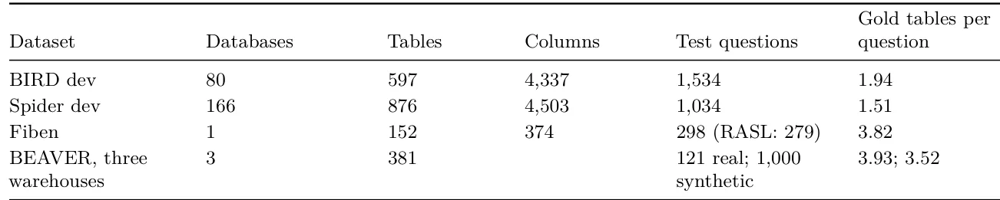
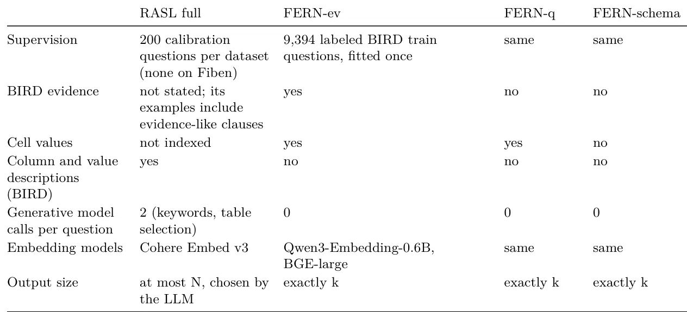
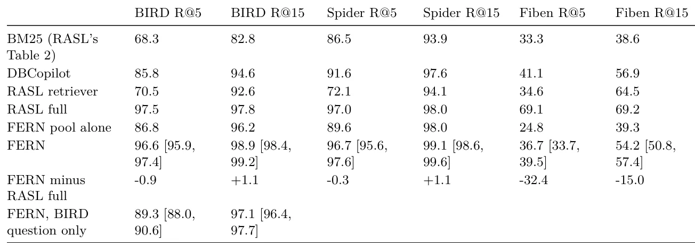
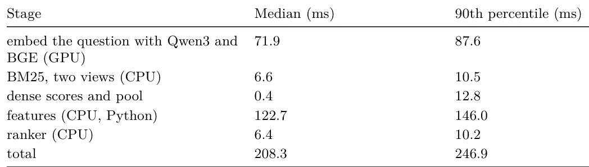

O Custo Oculto da Recuperação de Esquema
Sistemas Text-to-SQL convertem perguntas em linguagem natural em consultas SQL. Em catálogos massivos, o primeiro passo crítico é a recuperação de tabelas, ou schema linking: identificar quais tabelas do banco de dados são relevantes para responder à pergunta. Se o sistema recuperar tabelas erradas, a consulta SQL será incorreta. Se recuperar muitas, o contexto do modelo gerador fica saturado, aumentando custos e tempo de resposta.
A tendência recente, exemplificada pelo sistema RASL, é usar LLMs grandes (como Claude 3.5) para extrair palavras-chave e selecionar tabelas. Embora eficaz, essa abordagem tem custos elevados. O RASL estima 1,85 dólares por 100 consultas no BIRD, apenas na etapa de recuperação. Além disso, enviar o esquema do banco de dados para serviços externos pode violar políticas de privacidade corporativa.
O paper FERN (Feature-Engineered Ranking with No generative LLM) questiona: quão longe podemos chegar usando apenas modelos congelados e aprendizado de ranking tradicional? A hipótese é que a fusão de sinais de recuperação básicos, combinada com um ranker aprendido, pode competir com soluções baseadas em LLMs, sem os custos e riscos de latência associados.

A Arquitetura FERN: Congelado e Aprendido
FERN opera em quatro etapas distintas. A primeira é a recuperação congelada. Cada tabela é representada por dois tipos de texto: um 'full card' (nome do banco, nome da tabela, nomes das colunas) e um 'name card' (apenas palavras do nome da tabela e banco, com camelCase e underscores divididos). Isso permite capturar tanto o contexto estrutural quanto a semântica lexical.
Três modelos de embedding e busca lexical são aplicados a esses cards. O primeiro é o BM25, um algoritmo clássico de busca lexical. O segundo é o Qwen3-Embedding-0.6B, um modelo de embedding leve. O terceiro é o BGE-large-en-v1.5, um modelo de embedding mais robusto. Todos esses modelos são 'congelados', ou seja, seus pesos não são atualizados durante o treinamento do FERN. Eles geram cinco sinais de relevância para cada tabela no catálogo.
Na segunda etapa, o sistema cria um pool de candidatos. As pontuações dos cinco sinais são combinadas em uma única score de pool. As 100 tabelas com as maiores pontuações são selecionadas. Esse pool inicial já é forte: no BIRD dev, o recall a 100 tabelas é de 99,4%. Isso significa que, na maioria dos casos, as tabelas relevantes já estão presentes na lista reduzida.
Engenharia de Features para o Ranker
A terceira etapa é a mais crítica: transformar cada um dos 100 candidatos em um vetor de features para o ranker. O FERN calcula 120 features diferentes para cada tabela candidata. Essas features são agrupadas em famílias: score, agree, db, lex, cov, ev, val, type, meta e graph.
As features do grupo 'score' capturam a magnitude e a posição relativa de cada sinal de recuperação (BM25, Qwen3, BGE). As features 'agree' medem a concordância entre os modelos: quantos dos cinco sinais colocam a tabela no top 5 ou top 15? A discordância entre modelos pode ser um sinal forte de relevância ou ruído.
As features 'db' analisam o contexto do banco de dados. Por exemplo, qual é a melhor pontuação de qualquer tabela daquele banco? Quantas tabelas do mesmo banco estão no pool? Isso ajuda o ranker a entender se a relevância é específica da tabela ou difusa no banco. As features 'lex' e 'cov' medem sobreposição lexical e cobertura de tokens entre a pergunta e a tabela.
Ranking com LightGBM e LambdaRank
A quarta etapa é o ranking. Um modelo LightGBM, treinado com o objetivo LambdaRank, é usado para ordenar os 100 candidatos. O LambdaRank é um algoritmo de aprendizado de ranking que otimiza métricas de ordenação, como NDCG, em vez de apenas classificar pares isoladamente. O modelo é treinado uma única vez nas perguntas de treino do BIRD.
O treinamento é feito de forma eficiente. Cada pergunta gera um grupo de candidatos, e o ranker aprende a priorizar tabelas que contêm todas as tabelas gold (verdadeiras) para aquela pergunta. Uma vez treinado, o ranker é aplicado ponto a ponto (pointwise) para pontuar os candidatos de novas perguntas.
O FERN possui variantes. A FERN-ev usa as perguntas do BIRD junto com as 'evidências' (hints que indicam colunas e valores relevantes). A FERN-q usa apenas o texto da pergunta. A FERN-schema é adaptada para o Fiben, que tem características diferentes. Isso permite avaliar a robustez do ranker em diferentes cenários de entrada.

Resultados: Competindo com LLMs
Os autores comparam o FERN com os resultados publicados do RASL. No Spider, o FERN-q (sem evidências) atinge um recall de 96,7% nas top 5 tabelas, ficando apenas 0,3 pontos abaixo do RASL. Nas top 15, o FERN supera o RASL em 1,1 ponto (99,1% vs 98,0%). Isso é notável porque o FERN não foi treinado no Spider; o ranker foi ajustado apenas no BIRD.
No BIRD com evidências (FERN-ev), o recall nas top 5 é de 96,6%, 0,9 pontos abaixo do RASL. Nas top 15, o FERN atinge 98,9%, superando o RASL em 1,1 ponto. O pool de candidatos sozinho já alcança 96,2% de recall nas top 15, mostrando que a maior parte do trabalho pesado é feita pelos retrievers congelados. O ranker LightGBM agrega valor principalmente em orçamentos pequenos (top 5) e na métrica complete@k.
A métrica complete@k mede a probabilidade de que TODAS as tabelas gold estejam no top k. No Spider, o FERN eleva o complete@5 de 83,9% (pool) para 95,6% (ranker). Isso indica que o ranker é eficaz em agrupar conjuntos completos de tabelas, um requisito crucial para gerar SQLs corretos.
Limitações: Esquemas Opacos e Fiben
O desempenho do FERN não é uniforme. No Fiben, o sistema tem dificuldades significativas. O Fiben tem nomes de tabelas opacos (sem espaços, em uppercase, como ACCOUNTSPAYABLE), poucos nomes de colunas descritivos e uma única base de dados. Nesse cenário, o recall do FERN nas top 15 é de apenas 54,2%, muito abaixo do RASL (69,2%).
As features do ranker dependem de sinais que são fracos em esquemas opacos. O BM25 e os embeddings de texto natural não capturam bem a semântica de nomes sem espaços. Além disso, o pool de candidatos do FERN no Fiben tem recall de apenas 39,3% nas top 15, indicando que os retrievers congelados falham em identificar tabelas relevantes quando a linguagem natural está ausente.
Isso sugere que a abordagem FERN é sensível à qualidade lexical dos nomes de tabelas e colunas. Em ambientes empresariais com esquemas mal documentados ou nomenclatura técnica não natural, a performance pode degradar. O paper não testa fine-tuning dos embeddings para esses casos específicos.

Eficiência e Latência
Um dos maiores benefícios do FERN é a eficiência computacional. A latência mediana é de 208ms por pergunta em uma GPU NVIDIA A100. Isso é ordens de magnitude mais rápido que chamadas a APIs de LLMs, que podem levar segundos ou minutos dependendo da fila e do tamanho do contexto.
Os custos de inferência são desprezíveis comparados ao RASL. Não há chamadas a modelos hospedados. Os embeddings são pré-computados ou calculados localmente. O ranker LightGBM é leve e rápido. Para implantações em escala, onde milhares de consultas são processadas por hora, essa eficiência é crítica.
O paper também mede a latência em batch size 1 e 100, mostrando que o sistema escala bem. A pré-computação de índices e embeddings permite que a recuperação seja quase instantânea após o primeiro passo de busca lexical.
Análise de Features e Robustez
Os autores analisam quais features contribuem mais para o ranking. No BIRD com evidências, features não de recuperação (como estatísticas do banco e metadados) aumentam o complete@5 em 7,7 pontos em relação aos sinais de recuperação sozinhos. Isso confirma que o contexto estrutural é tão importante quanto a similaridade lexical.
O ranker é robusto a variações. Ao testar com resampling de bancos de dados inteiros (em vez de perguntas individuais), as intervalos de confiança do recall permanecem estreitos. Isso sugere que o modelo generaliza bem para bancos de dados não vistos durante o treinamento, desde que a estrutura lexical seja similar.
No entanto, o paper admite que não isola completamente o efeito da seleção de LLMs. O RASL pode usar informações adicionais não disponíveis no FERN, ou o LLM pode ter uma capacidade superior de inferir intenções implícitas. O FERN é uma alternativa viável, mas não necessariamente superior em todos os aspectos.

Conclusões e Implicações Práticas
O FERN demonstra que é possível construir um sistema de recuperação de tabelas competitivo sem depender de LLMs generativos. A fusão de retrievers congelados e um ranker aprendido é uma estratégia eficaz para catálogos com nomes descritivos, como BIRD e Spider.
Para empresas, o FERN oferece uma solução privada, barata e rápida. Não há vazamento de dados para APIs externas. A infraestrutura é simples: apenas GPUs para inferência de embeddings e um servidor para o ranker.
As limitações no Fiben alertam para a necessidade de adaptar os retrievers para esquemas opacos. Futuros trabalhos podem incluir fine-tuning de embeddings específicos para domínios técnicos ou a incorporação de metadados de schema mais ricos. Ainda assim, o FERN estabelece um novo baseline para recuperação de tabelas eficiente e escalável.
O que fica
- FERN combina BM25, Qwen3-Embedding e BGE-large para gerar 100 candidatos, eliminando a necessidade de chamadas a LLMs generativos durante a recuperação.
- Um ranker LightGBM treinado no BIRD ordena os candidatos usando 120 features, melhorando o recall em orçamentos pequenos de tabelas.
- O sistema opera em 208ms por pergunta em uma A100, sendo viável para ambientes empresariais que exigem privacidade e baixo custo.
- O desempenho cai significativamente em benchmarks com esquemas opacos ou sem hints de evidência, expondo limitações da abordagem.
Paper original: FERN: Cross-Benchmark Table Retrieval for Text-to-SQL with Frozen Retrievers and Learned Ranking
Comentários
Nenhum comentário ainda. Seja o primeiro.